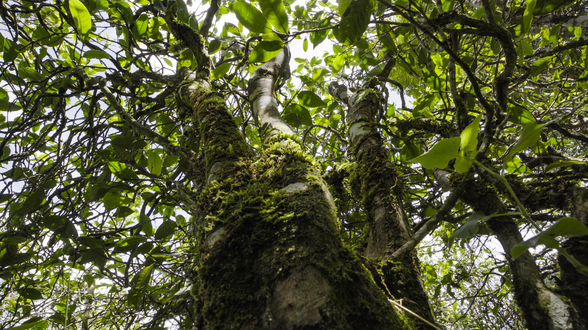
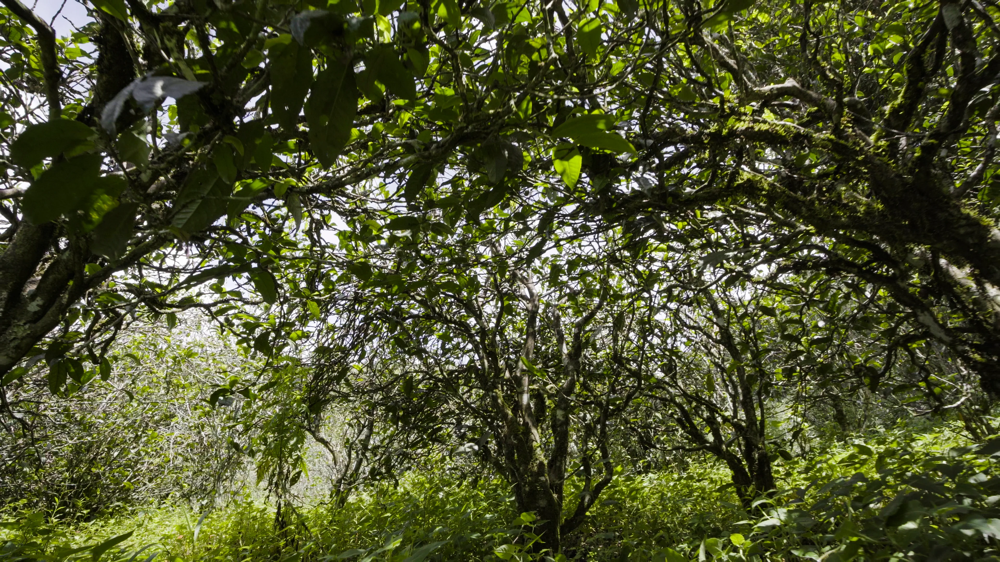
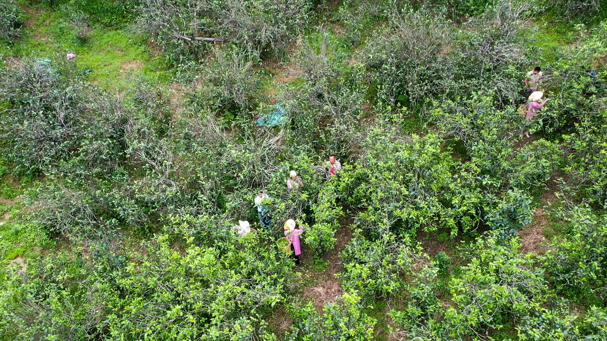
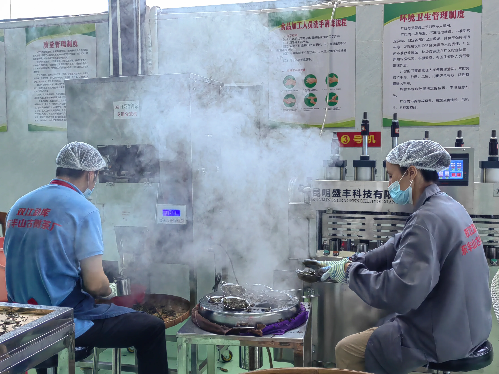
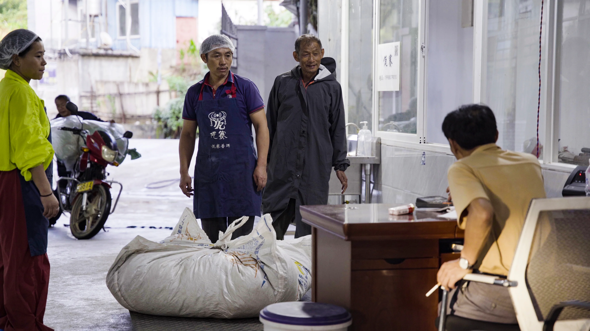
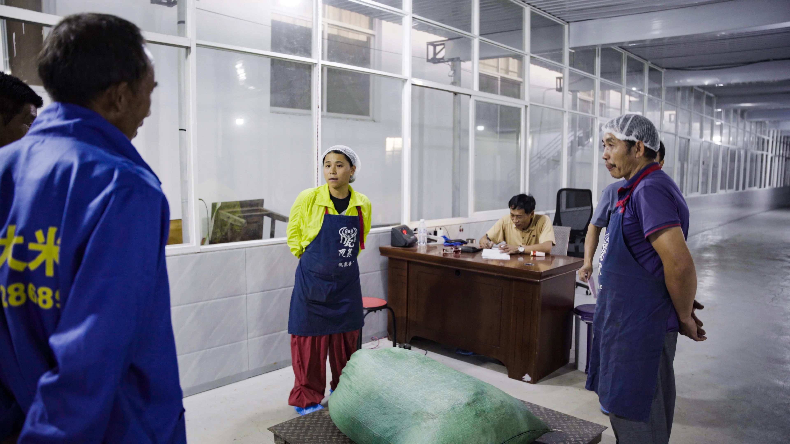

A tea origin built with the community
WASAI partners with more than 700 tea-farming households across East Half Mountain. Every harvest reflects local knowledge shaped by slope, sunlight, wind, and soil.
From East Half Mountain, Yunnan
Ancient tea gardens, organic care, and living heritage—shared with first-time drinkers and lifelong collectors.
Mist and ridgelines drift by—our tea gardens, framed in quiet light.
Our Story
WASAI partners with more than 700 tea-farming households across East Half Mountain. Every harvest reflects local knowledge shaped by slope, sunlight, wind, and soil.
Our tea gardens are managed by hand with clear quality accountability at each step. The goal is simple: clean, trustworthy leaves in every batch.
Tea Mountains & Ancient Trees
High-elevation plots, vine-trained large-leaf tea trees, and careful stewardship of both land and people form the foundation of every cup.



Tea 101
Pu'er is a Yunnan tea style known for depth, complexity, and aging potential. Like wine, terroir and craft shape each cup.
Raw (sheng) tea tastes bright and layered, evolving over years. Ripe (shou) tea is fermented and offers a smooth, earthy profile from day one.
Ancient-tree leaves are naturally lower yield and more concentrated. You get stronger structure, longer finish, and better aging trajectory.
Selected Collection
The Tea Journey
Quality & Trust
Our Factory



Contact